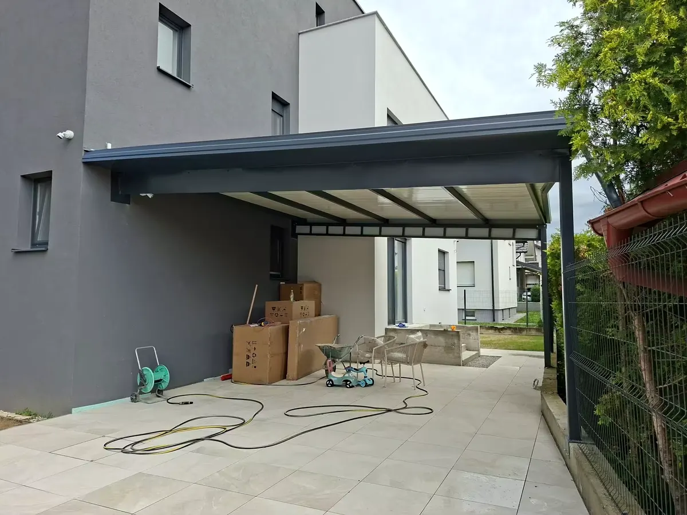
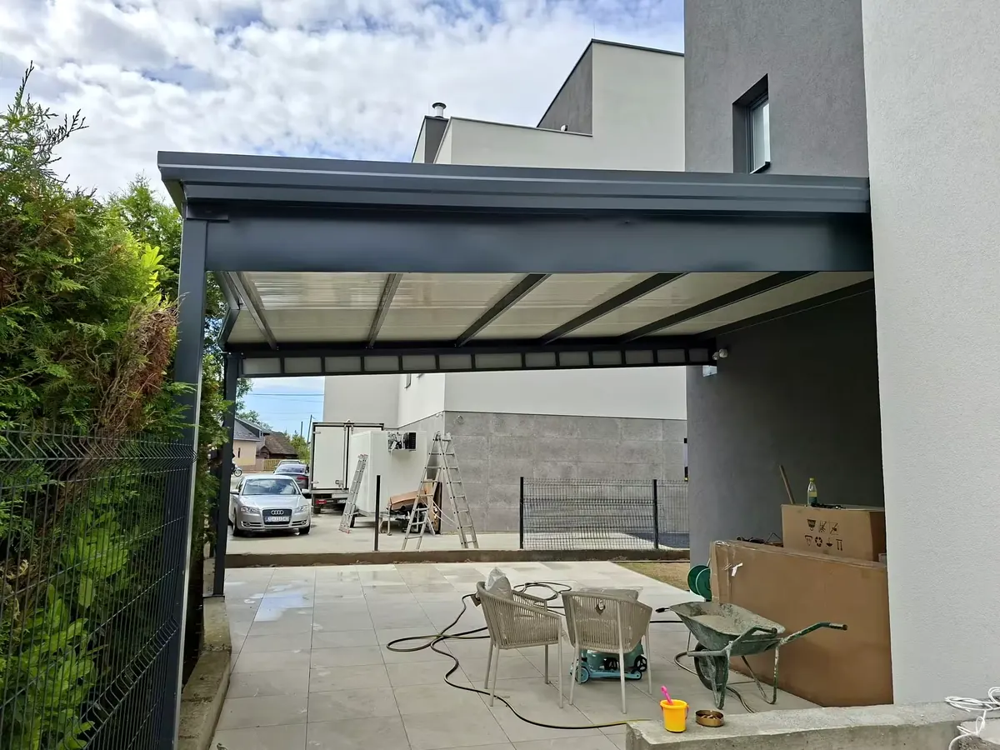
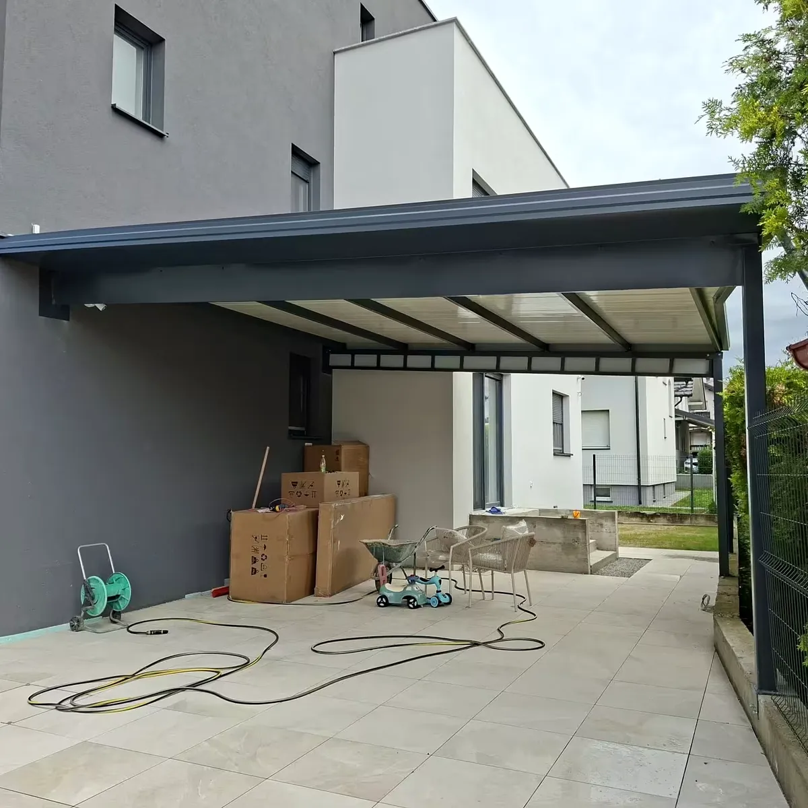

Čelična konstrukcija
Presjek profila definira se prema rasponu i načinu oslanjanja. Konstrukcija se izrađuje prema dogovorenoj geometriji.

IZRADA PO MJERI
Čelične nadstrešnice za auto izrađujemo po mjeri — za jedno ili dva vozila, samostojeće ili povezane s objektom.
Zatraži ponuduTEHNIČKI PRISTUP
Nema univerzalne nadstrešnice koja odgovara svakom prostoru. Širina, dubina, visina, nagib, položaj stupova i način povezivanja s objektom određuju se nakon podataka o lokaciji i, kada je potrebno, izmjere.
NAPOMENA Donje dimenzije služe kao primjer konfiguracije za lakše slanje upita. Konačna konstrukcija i presjeci profila određuju se prema projektu.
MJERE I VARIJANTE
| Varijanta | Širina | Dubina | Visina / prolaz | Napomena |
|---|---|---|---|---|
| Jednostruka | ≈ 3000 mm | ≈ 5000 mm | prema vozilu i padu | Primjer za jedno vozilo |
| Dvostruka | ≈ 5500–6000 mm | ≈ 5000 mm | prema vozilima i padu | Primjer za dva vozila |
| Po mjeri | prema lokaciji | prema lokaciji | prema prolazu | Konačno nakon dogovora / izmjere |
MATERIJALI I POKROVI
Konstrukcija, zaštita površine i pokrov dogovaraju se zajedno. Ne odabiru se samo po izgledu, nego i po rasponu, položaju i načinu korištenja.
Presjek profila definira se prema rasponu i načinu oslanjanja. Konstrukcija se izrađuje prema dogovorenoj geometriji.
Pocinčavanje i/ili plastificiranje u RAL nijansi dogovara se prema projektu i željenom izgledu.
Dobar izbor kada je važna propusnost svjetla i manja vizualna masa pokrova.
Praktičan neproziran pokrov za jednostavne i robusne izvedbe.
Opcija kada se traži puniji, toplinski stabilniji i vizualno zatvoreniji krovni sklop.
RAL PREVIEW
RAL 7016 je čest izbor za moderne objekte. Ostale nijanse dogovaraju se prije izrade.
IZVEDBE


ČESTA PITANJA
Cijena ovisi o širini i dubini, broju stupova, pokrovu, završnoj obradi, pripremi podloge i lokaciji montaže. Za konkretnu procjenu pošaljite približne dimenzije i fotografiju prostora.
Da. Dvostruka izvedba definira se prema širini parkirnih mjesta, načinu ulaska i raspoloživom prostoru za stupove.
Može, kada konstrukcija objekta i detalj spoja to dopuštaju. Način oslanjanja provjerava se prema konkretnoj lokaciji.
Odabir pokrova ovisi o željenom izgledu, količini svjetla i načinu odvodnje. Polikarbonat, trapezni lim i sendvič panel imaju različite prednosti i biraju se prema projektu.
Da. Zagreb i Zagrebačka županija dio su redovnog područja rada, uz Varaždinsku i Međimursku županiju.
UPIT BEZ OBVEZE